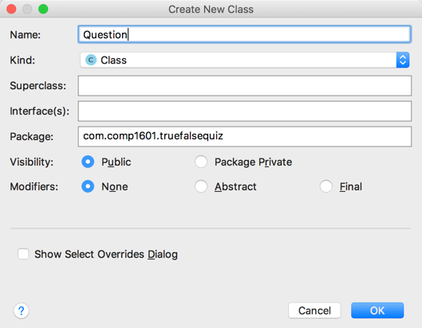

COMP 1601 Winter 2020
Tut06 -Application Java Objects
© L.D. Nel 2020
Revisions:
Description
Now that we know how to add java listener code to our application's buttons we will start adding java code to create a working app that allows the user to view several true-false questions and try to answer them. When completed this will form the basis of your first assignment.
The tutorial app is based on the GeoQuiz app built in Chapter 1 of "Android Programming: The Big Nerd Ranch Guide", 3/e by Bill Phillips, Chris Stewart, and Kristin Marsicano ©2017
If you have trouble with the java parts the recommend book Java Programming for Android Developers has good and lengthy explanations.
You need to demonstrate your exercise to the TA or Prof. before you leave the class to get credit for it. If you complete, or make significant progress on the exercise you will get a mark of 2. If you make some progress you will get a mark of 1 and can "upgrade" that mark to a 2 by showing your completed work within one week of this exercise. 0 marks for a no-show or unsufficient progress.
Demo Code
You should use your own answer code from the previous tutorial but alternatively we have provided some demo code that consists of the TrueFalseQuiz application answer code from the previous tutorial. Rebuild the demo code project with Build->Rebuilt Project and verify that it runs before proceeding with the exercises.
Problem 1: Some XML Question Resources
Add 5 Yes/No questions as XML string resources to the application. Embed the answer at the end of the question in [] square brackets as shown:
Problem 2: Java Question class
Next we will build a new java class Question and add it to the application. The easiest way in Android Studio is to right click on the package that represents our app's java code and choose New->Java Class:
In the new class creation dialog name the class Question and make sure the visibility is set to public:

The newly created class's code should look something like the following:
Design the class so that it has member variables to represent the question text and the answer text as follows (do you know what the significance of private vs. public is? If not ask in class):
public class Question {
private String mQuestion;
private String mAnswer;
public Question(String aQuestionAnswerString){
//aQuestionAnswerString is expected to be of the form:
//"Is Java an Object-Oriented Language?[Yes]"
}
public String getQuestion(){
return mQuestion;
}
public String getAnswer(){
return mAnswer;
}
}
Notice we plan to initalize the Question object using a string obtained from the XML resource and member variables will represent the question and answer as java String objects.
Problem 3: Question Constructor
Next write the constructor body for Question class. This should parse the text/answer combination into individual question and answer strings. To do this investigate the java String class using the Java API online documenation: https://docs.oracle.com/javase/8/docs/api/
Here is a possible strategy:
int index = aQuestionAnswerString.indexOf("[");
mQuestion = aQuestionAnswerString.substring(0,index);
mAnswer = aQuestionAnswerString.substring(index+1,aQuestionAnswerString.length()-1);
We will see in the next problem whether we got this right:
Problem 4: Collection of Questions for the App
Next we will add a collection of Question objects to the application and initialize them from the XML question resources:
Probably the most popular container, or collection class, in java is the ArrayList. Add an member variable mQuestions which is of type ArrayList<Question> to the application and add 5 Questions to it initialized using the XML resources. (You used an ArrayList in the java tutorial about songs.) Finally print out the 5 questions to System.out when the app runs. (Here we will see if we got our parsing right.).
Build and Run the app and verify that you see the questions printed out in the run window:
Problem 5: Presenting The Questions To The User
Finally lets build the actual behaviour of the app. It should work as follows:
When the app launches it should show the first question to the user and wait for them to press the Yes or No button. When they press a button a Toast should show them if their answer is right or wrong and the app should then "automagically" present the next question. After the last question the app should loop back to the first one again.
Here's what needs to be done:
Add an id to the TextView XML layout resource so we can sets its question text:
android:id="@+id/question_text_view"
Create a member variable of MainActivity can refer to the TextView:
TextView mQuestionTextView;
Initialize the variable by inflating the TextView layout resource:
mQuestionTextView = (TextView) findViewById(R.id.question_text_view);
Create an int variable to keep track of the index of the current question in the mQuestions collection:
private int mCurrentQuestionIndex = 0;
Set the text view to be the question text of the question at mCurrentQuestionIndex:
mQuestionTextView.setText(mQuestions.get(mCurrentQuestionIndex).getQuestion());
Finally modify the button listeners to check the answer and advance the question. Here is what the yes-button listener might look like:
mYesButton.setOnClickListener(v -> {
//Handle the yes button click
if(mQuestions.get(mCurrentQuestionIndex).getAnswer().equals("Yes")) {
Toast.makeText(MainActivity.this,
R.string.correct_answer_toast,
Toast.LENGTH_SHORT).show();
}
else{
Toast.makeText(MainActivity.this,
R.string.wrong_answer_toast,
Toast.LENGTH_SHORT).show();
}
mCurrentQuestionIndex++;
if(mCurrentQuestionIndex >= mQuestions.size()) mCurrentQuestionIndex = 0;
mQuestionTextView.setText(mQuestions.get(mCurrentQuestionIndex).getQuestion());
});
When you have implemented this behaviour run the app and verify that it presents all the questions to the user and shows them whether they got the answers right or wrong.
When you have completed these problems demonstrate your code to the TA or Prof. to get credit for the tutorial.Â